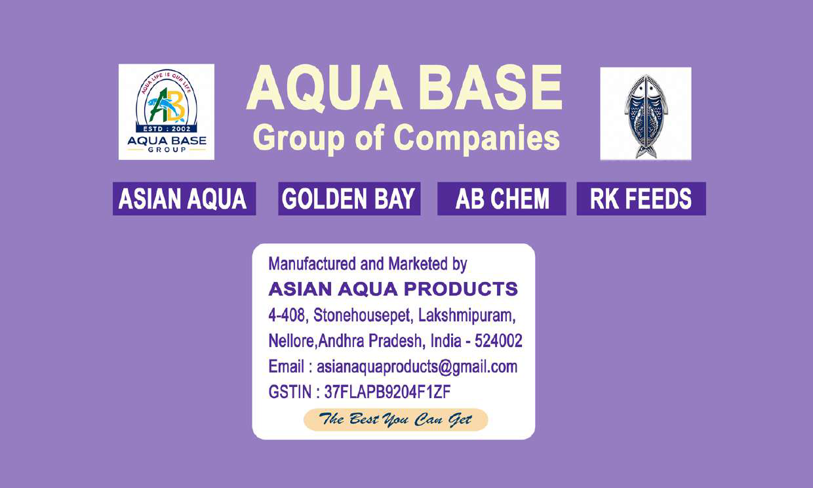

Founded in 2002 in Nellore, Andhra Pradesh—India's primary aquaculture hub—AQUA BASE Group of Companies (manufactured & marketed by Asian Aqua Products) was created to solve critical pond disease, water toxicity, and mortality challenges facing shrimp and fish farmers.
Operating under strict ISO 9001:2015 and cGMP quality frameworks, our automated manufacturing plant combines Specific Pathogen Free (SPF) probiotic technology with natural botanical extracts, creating zero-chemical, CAA certified antibiotic-free formulations.

Key milestones in our evolution as a trusted aquaculture brand.
Established AQUA BASE Group in Nellore, AP to formulate quality pond conditioners.
Upgraded manufacturing plant to automated ISO 9001 and cGMP standards.
Introduced AS-4 Plus and KING PRO + (40 Billion CFU) for intensive Vannamei culture.
Serving over 5,000+ happy farmers across 20+ states with 250+ authorized dealers.
Our Nellore facility combines research labs, automated blending, and high-barrier packaging.
Equipped for bacterial strain isolation, CFU verification, and pathogen inhibition testing under sterile conditions.
Precision liquid and powder blending lines that prevent cross-contamination and guarantee exact mineral ratios.
High-barrier metallic gold pouches and UV-resistant HDPE containers that ensure long shelf life and probiotic viability.